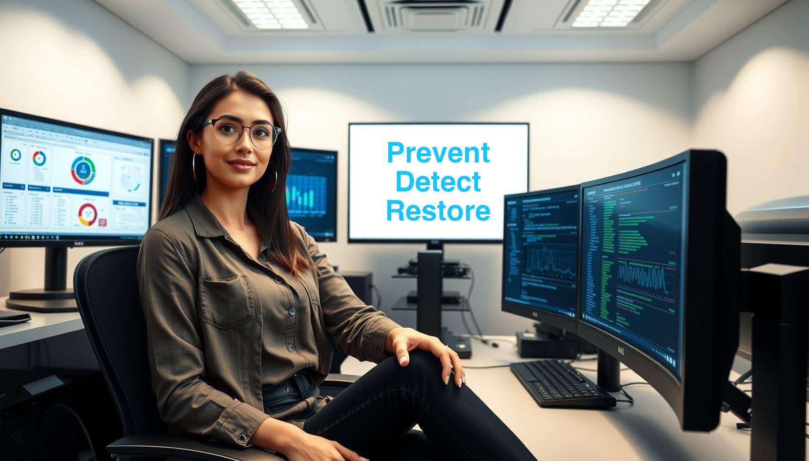

Objetivos de Ciberseguridad
En GuardianHubX, nuestra estrategia de seguridad se basa en tres pilares fundamentales: Prevención, Detección y Recuperación. Implementamos soluciones avanzadas para proteger los datos y sistemas de nuestros clientes ante cualquier amenaza cibernética.

Prevención
El primer paso en una estrategia de ciberseguridad efectiva es evitar que las amenazas lleguen a comprometer los sistemas. Para ello, utilizamos soluciones avanzadas como:
Detección
Detectar amenazas en tiempo real es clave para mitigar daños antes de que se produzcan incidentes graves. Contamos con:
Recuperación
Ante un incidente de seguridad, la capacidad de recuperación es esencial para minimizar el impacto. Ofrecemos: